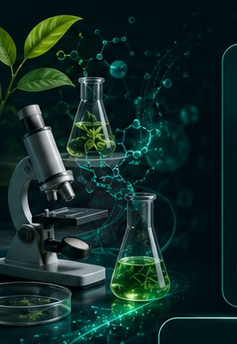

UNIDAD 01
LAB
Investigación, desarrollo e innovación
Bioprospección, formulación y validación científica que alimenta cada producto de la compañía.
- Bioprospección inteligente
- Formulación avanzada
- Validación científica
- Innovación continua
